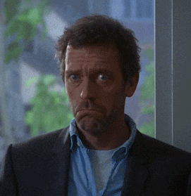

You have no idea how many times I annoyed gayathri and Ashwin asking them, "If you are gonna be my friend again?" "If we will be back hanging out normally"
They are so frustrated with me now, before they used to reply positively, now they are like: "It won't be normal, go and try to deal with it"

Ohh, this might come across as very high school friendship stuff.. But I don't know I am that way.
You should ask gayathri and sneha, they know better about this..lol
I just want you to tell me, what happened after that day, I still don't know If I did something to piss you off..
I can understand if you don't want to talk to me or hangout with me for some time, but It feels like It's never going back to normal..
and I don't know what to do.
It's actually very embarassing for me to fight for friendship I have never done this before, I hope you know how special friend you are to me..
I wish I should have told all of this sooner, but I didn't get the chance and for my worst luck, I got very sick for the first time in berhampur.
And obviously I don't want to text you this during end-sem exams!!
I don't know how to convey this, I am not cool enough to convey this in-person.
Before you think this is weird, just remember I am a total nerd, I don't know how to convey this stuff in cool fashion. This is just the way I know...
Currently, you're my best friend, and I told you I like you, that's it. I hope its not so much weird to get
past through this. Most people who tell this want to have a relationship and stuff, but I am built differently than Others,
Remember i didn't feel anything after iGEM results, its always different how I react to situations. It's never normal with me.
Even after you replied to my text that day, I was actually happy that day you called me "best friend", and I told ashwin thrice which weirded him out.
Haa now to some cool stuff.. I thought of giving ashwin a going away present. I brought a book and put that in
the drawer in my cubicle. Gayathri won't give it, because it's gonna look weird. You said If I want to do anything special to ashwin
before going away you're gonna come, Just give that book to him on my behalf. He thinks you are his friend btw!! He told me this!!